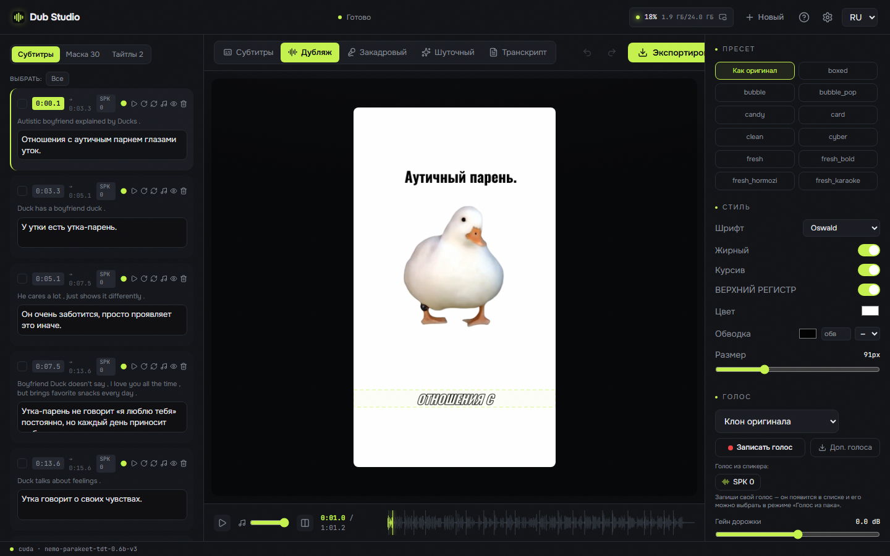
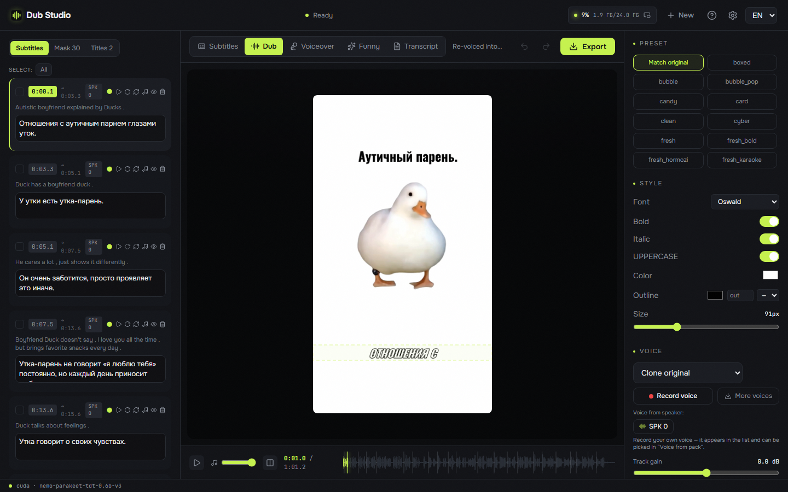
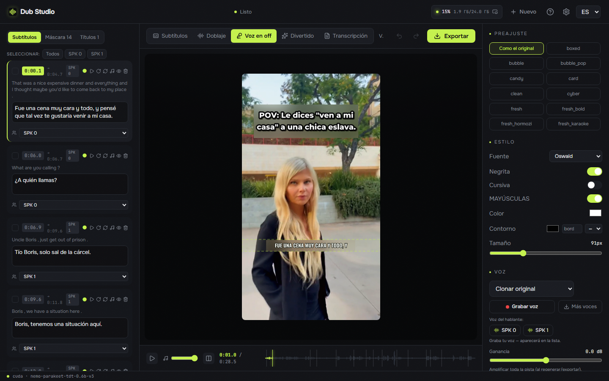
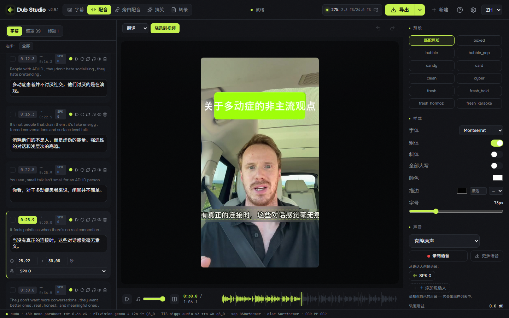
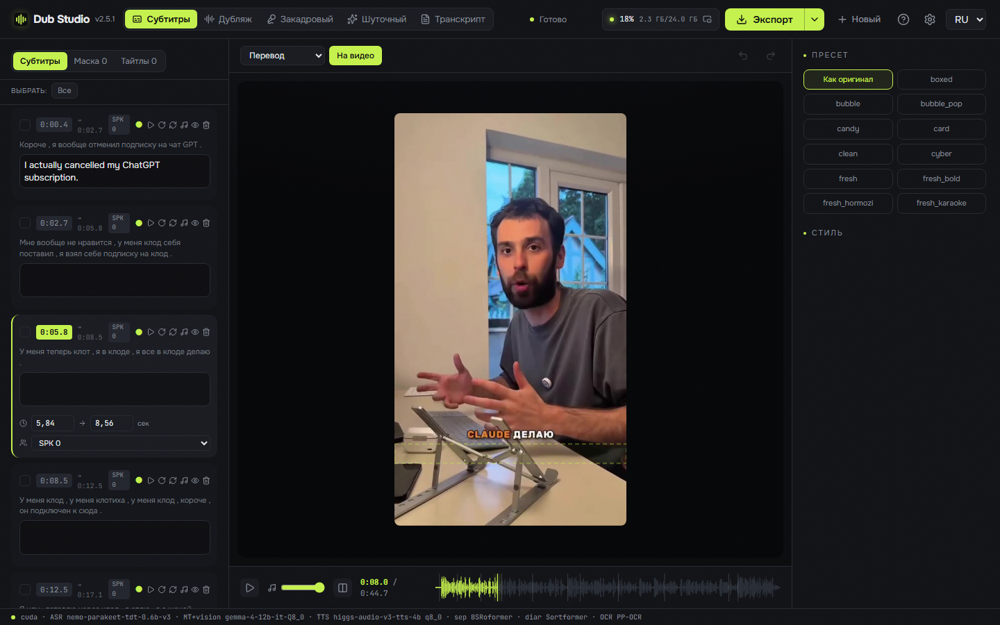
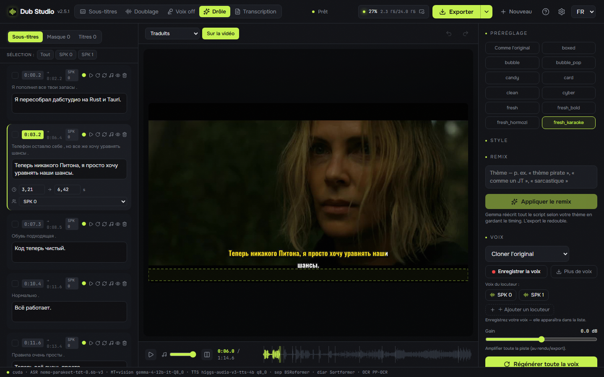
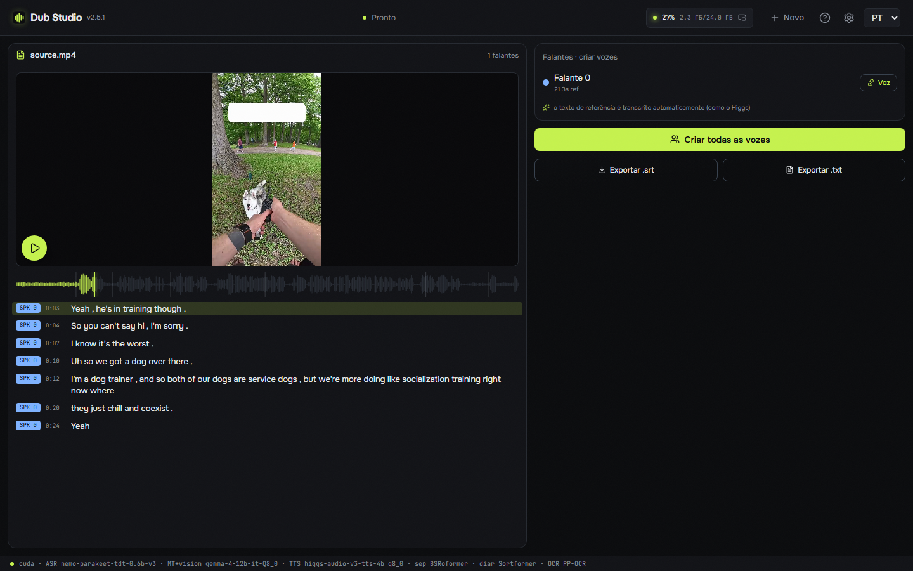

Re-voice any clip into another language — with the speaker's own voice cloned, captions translated, and on-screen text localized right on the frame. Local on your machine by default — no subscription; optional cloud (OpenRouter) for weak PCs or extra speed.

Every clip below was processed end-to-end on a local GPU. Different videos, different modes, different languages — nothing left the machine.
Load a clip once and send it into any mode — right inside the editor.
Full re-voice into the target language with the original timbre cloned — auto-cast per speaker or pick a voice.
Translated voice over the ducked original — the source is still audible underneath, balance adjustable.
Burn original-language captions and keep the original audio — no dubbing, no translation.
Give a theme — the model rewrites the whole script, then re-dubs it.
Clean diarized transcript with karaoke play-along, one-click voices, and .srt / .txt export.
Voice cloning — the original timbre speaks the new language (Higgs Audio v3).
Speaker diarization — a distinct voice per speaker (NVIDIA Sortformer, up to 4).
On-screen text localization — OCR blurs the original and prints a matched localized title.
Local translation + vision — Gemma-4 12B translates and reads the frame layout.
SOTA vocal separation — Mel-Band Roformer keeps the backing track intact.
26 caption presets — karaoke, word-by-word, neon and more, WYSIWYG.
Live editor — ~0.17 s/frame preview; every change visible instantly.
Batch processing — a queue of files with one setup.
100+ languages — dub into any major language: Spanish, Chinese, Japanese, Arabic, Hindi… source auto-detected.
Fully portable + auto-update — nothing touches your user profile.
Choice of ASR engine — Parakeet-TDT (GPU) or Whisper (CPU); pick the model size and quant in settings.
Composable modes — mix any steps: dub without subtitles, translated subtitles without dubbing, funny dub with your own voices.
Tune for your hardware — swap lighter quants per engine and cap the prefill batch + reference length to fit 8–12 GB GPUs and 32 GB RAM.
Resumable downloads — large models resume from where they stopped after a dropped connection, instead of restarting.
Add your own lines — insert custom phrases; voiced in the speaker's cloned voice and shown in subtitles.
Import subtitles — bring your own .srt/.ass as the exact transcript; tick “already in the target language” and it dubs straight from them, no translation.
Multi-language export — send one video into several languages at once; each inherits your layout, styles, blur and cloned voice.
Projects — save & resume — autosave, recent projects on the start screen, back to unfinished work in a click.
Character casting — bind a face to a voice; the app recognizes each character across the video and saves a casting profile reused across the whole series.
GPU, CPU or cloud — per stage — run separation, diarization and ASR on any of them; with the heavy stages in the cloud it works even with no NVIDIA.
The full editor — dub, voice-over, subtitles, funny remix and transcript — localized into 6 languages.






A smart auto-pass builds the first draft; then you fine-tune everything with a live preview.
Drop a video and pick a target language — separation, ASR, diarization, translation and OCR run in one pass.
Choose a mode: dub, voice-over, subtitles, funny remix or transcript.
Edit anything — transcript, voices, caption style, blur boxes, titles — with an instant preview.
Export the finished video. Everything runs locally on your GPU.